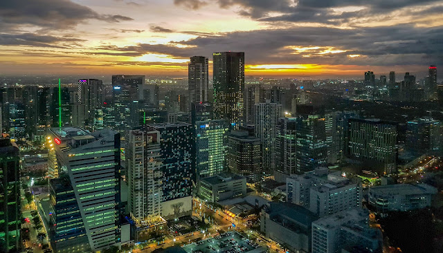
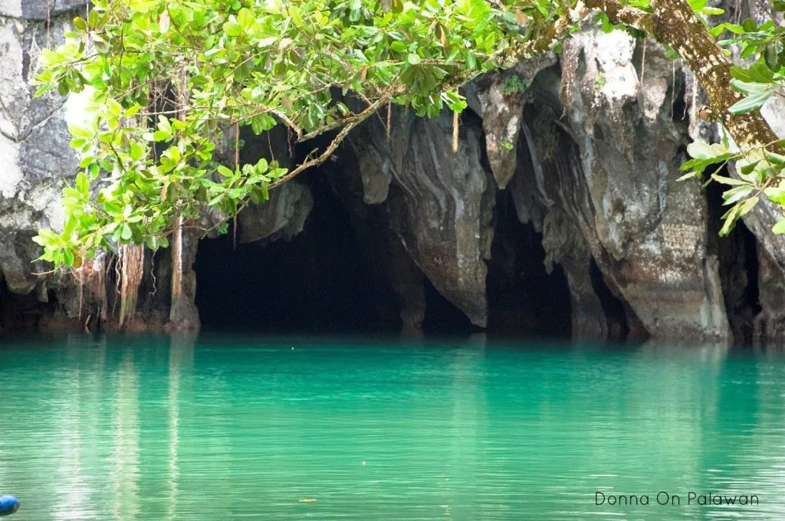

The Republic of the Philippines is a tropical country with 7,641 islands, forming an archipelago. It has 3 major islands: Luzon, Visayas, and Mindanao, with Manila being its capital city, located in Luzon. The Philippines' main languages are Tagalog and English, but it has several dialects from several provinces. Since it is located near the equator, it only has 2 seasons: the wet season and the dry season. The wet season occurs from June to November, while the dry season occurs from December to May.
The Philippines has various tourist attractions, from beaches to mountains. Here are the top 5 destinations that we recommend you visit as a tourist.
| TOP 5 TOURIST ATTRACTIONS IN THE PHILIPPINES |  | 1. Bonifacio Global City, TaguigBGC (Bonifacio Global City) is a city that feels surreal due to its contemporary style. It is a small city full of modern buildings, and everything is within reach. If you are looking for cities as incredible as New York, then I suggest you check this tourist attraction out. |
2. Taal Lake, BatangasThe Taal Lake surrounds Taal Volcano, a volcano on water, which is something pretty fascinating. The view of the volcano is best from any hotel or restaurant in the upland. Some places recommended are Sky Ranch and the Picnic Grove. |
 | 3. Underground River, PalawanThe Underground River is known for its unique structure. The dark cave shows historical images of objects such as dinosaurs, jellyfish, and a ship. There are also small yet beautiful waterfalls inside the cave. However, it is advised that you seek professional helpers to guide you in this destination. |
4. Boracay, AklanBoracay is known for having the best beaches in the Philippines. Its white sand and clear water make it an amazing tourist attraction. This is easily one of the best places to visit if you ever decide to travel to the Philippines. |
5. Chocolate Hills, BoholThe Chocolate Hills is a group of hills known for its color based on the season. The hills turn brown during the dry season, making them called "chocolate" hills. However, they turn green during the wet season, so it is best to explore the Chocolate Hills during the dry season. |
|---|
Allison Hope F. Lopez
OB Montessori Center INC: Sta. Ana Campus
January 18, 2024
Information & Communication Technology